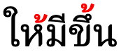
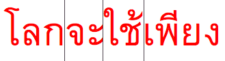

This page gathers together basic information about the Thai script and its use for the Thai language. It aims (generally) to provide an overview of the orthography and typographic features, and (specifically) to advise how to write Thai using Unicode.
See also the companion document, Thai character notes, for detailed information about specific Unicode characters.
Phonetic transcriptions should be treated as an approximate guide, only. Many are more phonemic than phonetic, and there may be variations depending on the source of the transcription.
The Thai script is used primarily for writing the Thai language, as well as Northern Thai, Northeastern Thai, Southern Thai, and Thai Song, which are separate languages. It is also used to write a number of minority languages in Thailand, Laos and China, as well as Pali, which is widely used in Buddhist temples and monasteries.s
Name: อักษรไทยʔ̯àksɔ̌ːn tʰāj Thai script.
The alphabet was derived from the Old Khmer script, which descended from Pallava. Thai tradition attributes the creation of the script to King Ramkhamhaeng the Great (พ่อขุนรามคำแหงมหาราชpʰo kʰun raːm kʰam ŋɛː ma haː raː tɕʰa) in 1283, though this has been challenged.
Both the Thai language and script are closely related to Lao and its script.
Thai is an abugida. Consonant letters have an inherent vowel sound. Vowel-signs are attached to the consonant to produce a different vowel. See the table to the right for a brief overview of features for the modern Thai orthography.
(See the key. Character counts exclude ASCII characters.)
Thai text runs left to right in horizontal lines.
Spaces are used to separate phrases, rather than words.
Each onset consonant is associated with a high, mid, or low class related to tone. Tone is indicated by a combination of the consonant class, the syllable type (checked/unchecked), plus any tone mark.
No conjuncts are used for consonant clusters.
Syllable-initial clusters and syllable-final consonant sounds are all written with ordinary consonant letters. It can therefore be difficult to algorithmically detect syllable boundaries.
The Thai orthography has an inherent vowel, and represents vowels using vowel-signs (including prescripts), and consonants/diacritics. Only vowel-signs that appear above or below the consonant are combining marks; the others are ordinary characters that are typed in the order seen. Vowels are often written differently when they appear in a closed vs. open syllable.
There are no independent vowels, and standalone vowel sounds are written using vowel-signs applied to อ [U+0E2D THAI CHARACTER O ANG].
This page lists 37 composite vowels. Composite vowels can involve up to 4 glyphs, and glyphs can surround the base consonant(s) on up to 3 sides, eg. เกียะek̯īy̱akiːa.
Thai has native digits, and they are commonly used.
Character index
This section lists non-ASCII characters used for Thai, and other characters in the Thai script block not used by Thai. For descriptions of usage, click on ↓.
๎ [U+0E4E THAI CHARACTER YAMAKKAN] is an ancient punctuation mark used to mark clusters, such as in พ๎ราห๎มณp̱ʰ๎ṟāh๎m̱ṇ̱pʰraːmǒn.
ฺ
Numbers
๐␣๑␣๒␣๓␣๔␣๕␣๖␣๗␣๘␣๙
Punctuation
“␣”␣‘␣’␣๚␣๛␣๏
CLDR additions
‐␣–␣—␣…␣′␣″
Symbols
฿
In character lists, show:
Vowels
The Thai orthography has an inherent vowel, and represents vowels using 15 vowel-signs (including 5 prescripts), and 5 consonants/diacritics. Only vowel-signs that appear above or below the consonant are combining marks; the others are ordinary characters that are typed in the order seen. Vowels are often written differently when they appear in a closed vs. open syllable.
There are no independent vowels, and standalone vowel sounds are written using vowel-signs applied to อ [U+0E2D THAI CHARACTER O ANG].
This section lists 37 composite vowels (made from 12 vowel-signs, and 4 consonants/diacritics). Composite vowels can involve up to 4 glyphs, and glyphs can surround the base consonant(s) on up to 3 sides, eg. เกียะek̯īy̱akiːa.
Vowel signs in Thai are a mixture of combining characters and ordinary spacing characters, Only the superscript and subscript vowel-signs are combining characters.
Prescript vowel signs
Five vowel-signs appear to the left of the onset consonant, eg. ไข่
.
เ␣แ␣ใ␣ไ␣โ
Thai uses a visual encoding model and these are not combining characters. They are typed and stored before the base.
These vowel-signs are placed before the start of the syllable. This means that a word with a consonant cluster at the start separates the prescript vowel from any postscript vowels by more than one consonant character, eg. เปล่า.
The consonant ร [U+0E23 THAI CHARACTER RO RUA] is pronounced as a vowel a when doubled medially, eg. ธรรม. When doubled at the end of a syllable it is pronounced an, eg. กรรไกร. Note, however, that this may also constitute the end and beginning of two syllables, eg. ภรรยา.
Maitaikhu
็ [U+0E47 THAI CHARACTER MAITAIKHU] is used to shorten vowel sounds, but also occasionally operates as a vowel-sign in its own right.
It converts vowels produced by the following three vowel signs to short vowels when they occur in medial position:
–็อ–ɔː becomes ɔ,
เ–็–eː becomes e, eg. เด็ก, and
แ–็–æː becomes oːj (not very common).
It is also used for ewเ–็ว (eːw > ew), eg. เร็ว.
One word consists of consonant + short symbol: ก็gɔ.
Composite vowels
All vowels represented by combinations of the above characters:
–ือ␣เ–ะ␣เ–็␣เ–อะ␣เ–อ␣เ–ิ␣โ–ะ␣–็อ␣แ–ะ␣แ–็␣เ–าะ␣ ␣เ–ียะ␣เ–ีย␣เ–ียว␣–ิว␣เ–ือะ␣เ–ือ␣เ–ือย␣–ัวะ␣–ัว␣–วย␣–ุย␣–ูย␣เ–็ว␣เ–ว␣เ–ย␣แ–ว␣–็อย␣โ–ย␣–อย␣–ัย␣ไ–ย␣–าย␣เ–า␣–าว␣ ␣ฤๅ␣ฦๅShow which combinations contain a given character:
The following list shows where vowel-signs are positioned around a base consonant to produce vowels, and how many instances of that pattern there are. The figure after the + sign represents combinations of Unicode characters,
5 prescript, eg. โกok̯ (ko)
2 postscript, eg. กาk̯ā
5 superscript, eg. กิk̯i
2 subscript, eg. กุk̯u
1+5 sup+postscript, eg. กือk̯ɯ̄ʔ̯kɯːo
+4 post+postscript, eg. กาวk̯āw̱kaːw
+2 sub+postscript, eg. กุยk̯uy̱kuj
+10 pre+postscript, eg. เกะek̯akè
+3 pre+superscript, eg. เกิek̯ikɤː
+2 super+post+post, eg. กัวะk̯äw̱akua
+2 pre+post+post, eg. เกาะek̯āakɔ̀
+3 pre+sup+postscript, eg. เกือek̯ɯ̄ʔ̯kɯːa
+4 pre+sup+post+postscript, eg. เกียะek̯īy̱akiːa
At maximum, vowel components can occur concurrently on 3 sides of the base.
Distribution of vowel elements is as follows:
ั ิ ี ึ ื ็
ำ
เ แ ใ ไ โ
อ ะ า ย ว ๅ
ะ ย
ุ ู
Characters that don't appear in the combinations:
ຸ␣ູ␣ໃ␣ໄ␣ໍ␣ຳ
Vowel absence
Vowel absence after syllable-final consonants is not normally marked in any way. Nor is it marked in syllable-initial clusters.
์ [U+0E4C THAI CHARACTER THANTHAKHAT] can be used above a consonant or syllable when it is not pronounced (usually at the end of a syllable), eg. รถเมล์, ศักดิ์สิทธิ์. It is often used for foreign loan words, eg. คอมพิวเตอร์, โปสการ์ด, สแตมป์.
The following tables show how vowel sounds commonly map to characters or sequences of characters. The dotted circle indicates the location of the consonant relative to the vowel-sign; if there are 2 circles, the vowel is used only in closed syllables.
These letters are actually considered to be consonants in Thai.
The long forms of both are created using ๅ [U+0E45 THAI CHARACTER LAKKHANGYAO], ie. ฤๅ and ฦๅ. Otherwise, that character doesn't appear alone.
Consonants
Each onset consonant is associated with a high, mid, or low class related to tone. Tone is indicated by a combination of the consonant class, the syllable type (checked/unchecked), plus any tone mark.
No conjuncts are used for consonant clusters.
Syllable-initial clusters and syllable-final consonant sounds are all written with ordinary consonant letters. It can therefore be difficult to algorithmically detect syllable boundaries.
Consonant sounds
Click on the sounds to see where else in the document they are referred to.
A silent ห [U+0E2B THAI CHARACTER HO HIP] is added before the following characters to make their default tonal class high, eg. หมา, หยุด.
ม␣น␣ง␣ว␣ร␣ล␣ย␣ญ
See onset_clusters for further details about how these are presented.
The letter O ANG
อ [U+0E2D THAI CHARACTER O ANG] is silent when used as a base for vowels at the beginning of a syllable. When it appears alone after a base consonant it becomes the vowel ɔː. It is also used in combination with other characters to produce additional vowel sounds (see complex_vowels).
Consonant clusters
Consonant clusters occur syllable-initially, or where one syllable ends with a consonant and the next begins with one.
Thai doesn't have conjuncts, stacking, or special code points for final consonants, etc.
Syllable-onset clusters
Consonant clusters at the start of a syllable are usually one of the following:
There are no dedicated code points for glides when they are used after an initial consonant, so it is feasible that ปลา could be pronounced pà laː in a different context.
Tone marks and/or super-/subscript vowel-signs are attached to the second consonant, eg. เปลี่ยน.
Prescript vowel-signs are placed before the first consonant in the cluster, ie. at the start of the syllable, eg. โปรแกรม, which does this twice.
The vocalics can also be used after an initial consonant, and again can create ambiguity for pronunciation, eg. พฤหัส vs. พฤษภา.
Final+initial consonant folding
A consonant that appears at both the end of one syllable and the beginning of the next may be expressed with a single character, even if the sounds in each phonetic location differ, eg. สinพิสดาร, or ล in จุลทัศน์.
Only the following set of consonants behave in this way.t204
จ␣ช␣ศ␣ษ␣ส␣ล
Syllable-final consonants
Only the phonemes p, t, k, m, n, ŋ occur at the end of a syllable, however many more consonant letters can appear in final position.
The following consonant letters are pronounced differently in syllable-initial and syllable-final positions, eg. ล in ลิงand ตำบล.
จ␣ช␣ศ␣ษ␣ส␣ร␣ล␣ญ
Consonants at the end of a syllable use ordinary code points, eg. ตื่น.
This can create some ambiguity, since there is no distinction between the sequence in the previous example and one where น is a new syllable with an inherent vowel.
The one exception is the character that is normally regarded as a vowel, ำ [U+0E33 THAI CHARACTER SARA AM], which includes the final m sound, eg. ห้องน้ำ. (A final m is not always represented using sara am, eg. ห้าม.)
Consonant sounds mapped to characters
The following tables show how Thai consonant sounds commonly map to characters or sequences of characters. High class (h), mid class (m), low class (l) and syllable-final (f) are indicated.
The following chart shows how to tell which tones are associated with a syllable.
Consonant
Checked?
Tone mark
Tone
high
checked
short
˩˩low
long
˩˩low
open
-
˩˥rising
่
˩˩low
้
˥˩falling
mid
checked
short
˩˩low
long
˩˩low
open
-
˧˧mid
่
˩˩low
้
˥˩falling
๊
˦˥high
๋
˩˥rising
low
checked
short
˦˥high
long
˥˩falling
open
-
˧˧mid
่
˥˩falling
้
˦˥high
'Checked' means ending in the sound -p, -t, or -k or a short vowel.
The expected typing and storage position for tone marks is immediately after the base consonant of the syllable, or after a superscript or subscript vowel-sign if there is one.
The tone mark should be typed before ำ [U+0E33 THAI CHARACTER SARA AM], but should be displayed above the nikhahit, eg. ก่ำ.
Other letters
Thai uses the following additional characters with the general property of letter. See abbrev.
ๆ␣ฯ
Numbers, dates, currency, etc.
The CLDR standard-decimal pattern is #,##,##0.###. The standard-percent pattern is #,##,##0%.c
Thai has a set of decimal digits, that are used regularly.
๐␣๑␣๒␣๓␣๔␣๕␣๖␣๗␣๘␣๙
Currency
The CLDR standard format for currency is ¤#,##0.00.c
The currency symbol for baht is encoded in the Unicode Thai block.
฿
Dates
Thailand commonly uses the Buddhist Era calendar. The Gregorian year 2000 was 2543 in the Buddhist calendar.
Buddhist era date at the top of a Thai newspaper: 15 March 1995.
In fig_thai_date the abbreviation พ.ศ.p̱ʰ.ś. stands for Buddhist era.
Text direction
Thai text runs left to right in horizontal lines.
Glyph shaping & positioning
This section brings together information about the following topics:
writing styles;
cursive text;
context-based shaping;
context-based positioning;
baselines, line height, etc.;
font styles;
case & other character transforms.
None of the characters require special shaping based on the visual context. Nor is printed text cursive.
The orthography has no case distinction, and no special transforms are needed to convert between characters.
Writing styles
Modern type styles often omit the loops found in more traditional typefaces. See an article that explores this in depth.
Loopless is considered to be more contemporary and modern, and is mainly used for advertising and titling. The distinction doesn’t necessarily map to that of serif vs sans – Noto, for example, provides both serif and sans Thai font faces, but they both have loops. On the other hand, Neue Frutiger Thai offers traditional (looped) and modern (loopless) alternatives as part of the same font family (each with both regular, italic and bold substyles).
The Silom font uses the traditional looped glyphs.The Sukhumvit Set font uses modern unlooped glyphs.
Context-based positioning
Most of the combining characters in Thai are used for vowel-signs and tone marks.
Combining characters need to be placed in different positions, according to the context. The example below shows the same tone character displayed at different heights, according to what falls beneath it.

The same tone mark displayed at different heights.
Thai regularly combines multiple combining characters above a base consonant. There are two examples in the text below, both of which show a base character with a vowel sign and then a tone mark on top.
Multiple diacritics (vowel sign + tone mark) attached to the same base character.
Baselines, line height, etc.
The baseline of Thai text is the same as that of embedded Latin text, so there are no particular issues there. However, Thai text takes up more vertical space than Latin text.
Line height & inter-line spacing
Thai places vowel and tone marks above base characters, one above the other, and can also add combining characters below the line. The complexity of these marks means that the vertical resolution needed for clearly readable Thai text is higher than for, say, Latin text.
In addition, Thai tends to adds more interline spacing than Latin text does.
Here is an example of a word with combining characters above and below base characters:
พรุ่งนี้
Multiple diacritics above and below the base significantly increase the vertical height of lines.
Font styles
Ben Mitchell describes how italicisation is used for meta-text and to convey the ‘about’ voice, rather than for emphasis or names of things (for which bold is used).
Italicisation tends to be applied to whole paragraphs or groups of paragraphs, for such things as picture captions, bylines, and other labels, commentaries, summaries such as standfirsts in magazines or news stories, and signposting. It is also regularly used for direct speech between quote marks.
Observation: Thai newspapers appear to use italic text for captions and by-lines. There is no evidence of the use of inline italicisation, but there is inline bolding.
Structural boundaries & markers
Grapheme boundaries
Non-combining Thai vowel characters are treated as independent grapheme clusters. Only combining characters are grouped together with their base into a cluster.
Grapheme cluster boundaries split non-spacing vowel signs from their base consonants, but not combining characters.
The grapheme cluster boundaries indicate the units of text used by cursor movements and forward deletion. It also allows justification algorithms to insert equal amounts of space between non-combining letters, including between non-combining vowel-signs and their consonants.
Word boundaries
Thai doesn't separate words in a phrase.
There is, however, a concept of words in the text. For example, lines are supposed to be broken at word boundaries.
Word boundaries occur where the vertical lines appear, though they are not marked by the script.
The main difficulty arises when dealing with compound words. It can often be difficult to decide whether a given string of syllables represents multiple words or a single compound word.
Alternative line break opportunities for Thai text using compound nouns.
The variation may be related to the operation being performed on the text (eg. line breaking in narrow newsprint columns, vs. double-click selection, vs. cursor movement, etc.), or it may just be down to personal preference,
The difference may also be contextually dependent. Wirote Aroonmanakun describes how คนขับรถ should be viewed as a single word in the context คนขับรถนั่งคอยอยู่ในรถ, whereas in the phrase คนขับรถผ่านแยกนี้ไม่มากนัก it would be viewed as 3 words, referring to anyone who is driving.a
Proper names, which are composed from multiple words, are also problematic, especially because there are no capital letters to distinguish them from other pieces of text.g
ZWSP & WJ
In order to manually fine-tune word-boundary detection, the invisible character U+200B ZERO WIDTH SPACE (ZWSP) can be used to create breaks.u625
To prevent a break between syllables, U+2060 WORD JOINER(WJ) can be used.
It is also important to bear in mind that Thai may be used to write various languages, in particular minority languages for which different dictionaries are needed. Since such dictionaries may not available in a given browser or other application, there is a tendency to use ZWSP in order to compensate.
Large-scale manual entry of ZWSP and WJ has potential downsides because the user cannot see them; this leads to problems with ZWSP being inserted in the wrong position, or multiple times. However, these don't set a state, so it doesn't create major issues. It would be useful, however, if an editor showed the location of these characters.
Care should also be taken when trying to match text, eg. for searching in a page. WJ should be ignored. ZWSP may or may not be ignored, depending on whether word boundaries are significant for the search.
Thai uses space as a phrase marker, rather than to delimit words, often in places where English text would use commas or periods.
Latin-based punctuation such as comma, period, and colon are also used in text, particularly in conjunction with Latin letters or in formatting numbers, addresses, and so forth.
๚ [U+0E5A THAI CHARACTER ANGKHANKHU] is used to mark the end of a long segment of text. It can be combined as ๚ะ to mark a larger segment of text; typically this usage can be seen at the end of a verse in poetry.u625
According to CLDR, the default quote marks for Thai are “ [U+201C LEFT DOUBLE QUOTATION MARK] at the start, and ” [U+201D RIGHT DOUBLE QUOTATION MARK] at the end.c
When an additional quote is embedded within the first, the quote marks are ‘ [U+2018 LEFT SINGLE QUOTATION MARK] and ’ [U+2019 RIGHT SINGLE QUOTATION MARK].c
Emphasis
tbd
Abbreviation, ellipsis & repetition
Repetition
ๆ [U+0E46 THAI CHARACTER MAIYAMOK] is used to mark repetition of preceding letters.u625 It is typically preceded and followed by a space, eg. ทุกวัน ๆ. However, some publishers prefer to publish without a leading space, ie. ทุกวันๆ.g
This character shouldn't be wrapped to the beginning of a new line on its own, and should be kept not far from the preceding text that it duplicates during justification.g
Ellipsis/abbreviation
ฯ [U+0E2F THAI CHARACTER PAIYANNOI] is used to indicate elision or abbreviation of letters; it is viewed as a kind of letter, however, and is used with considerable frequency because of its appearance in such words as the Thai name for Bangkok, กรุงเทพฯk̯ṟuŋ̱eṯʰp̱ʰ⋯krūŋ tʰêːp, which is short for กรุงเทพมหานครk̯ṟuŋ̱eṯʰp̱ʰm̱hāṉḵʰṟkrūŋ tʰêːp mahǎː nákʰɔ̄ːn. It is followed by a space.
Paiyannoi is also used in the combination ฯลฯ to create a construct called paiyanyai , which means “et cetera, and so forth.”u625
Some abbreviations are written using a full stop, eg. สนง.ตปท.sṉŋ̱.t̯p̯ṯʰ.Office of the Royal Thai Police, which is short for สำนักงานตำรวจแห่งชาติsaᵐṉäk̯ŋ̱āṉt̯aᵐṟw̱c̯ɛh¹ŋ̱c̱ʰāt̯i.
Inline notes & annotations
tbd
Other inline ranges
tbd
Other punctuation
tbd
Line & paragraph layout
Line breaking & hyphenation
Thai doesn't indicate word boundaries, but when Thai text is wrapped at the end of a line you should not split a word.
As you change the width of the browser window the highlighted text above should break at the following points if your browser supports Thai wrapping:

Because Thai doesn't separate words, applications typically look up word boundaries in a dictionary, however, such lookup doesn't always produce the needed result, especially when dealing with compound words and proper names (see words). To counteract these deficiencies, authors may use U+200B ZERO WIDTH SPACE and U+2060 WORD JOINER (see zwsp).
Character properties
Characters in Thai have the following assignments related to line-break properties.
AL (ordinary alphabetic and symbol characters) requires other characters to provide break opportunities; otherwise, unless tailored rules are applied, no line breaks are allowed between pairs of them.
B2 (break opportunity before and after) the EM DASH used to set off parenthetical text may allow line breaks before or after, but may also be affected by local orthographic rules.
BA (break after) indicates that it is normal to break after that character.
IN (inseparable characters) is intended to be used consecutively. There is never a line break between two characters of this class.
NU (number) behaves like ordinary characters (AL) in the context of most characters but activate the prefix and postfix behavior of prefix and postfix characters.
OP (open punctuation) should be kept with the character that follows. This is desirable, even if there are intervening space characters, as it prevents the appearance of a bare opening punctuation mark at the end of a line.
PO (postfix numeric) usually follows a numerical expression and may not be separated from preceding numeric characters or preceding closing characters, even if one or more space characters intervene. For example, there is no break opportunity in “(12.00) %”..
PR (numeric prefix) may not be separated from following numeric characters or following opening characters, even if a space character intervenes. For example, there is no break opportunity in “฿ (100.00)”.
QU (quotation) characters can be opening or closing, or even both, depending on usage. The default is to treat them as both opening and closing.
SA (Southeast Asian) require morphological analysis to determine break opportunities, in a way similar to a hyphenation algorithm. No break opportunities will be found otherwise. Complex context analysis, often involving dictionary lookup of some form, is required to determine non-emergency line breaks. If such analysis is not available, it is recommended to treat them as AL.
Text alignment & justification
Justification in Thai primarily adjusts the blank spaces between phrases, rather than expanding the text between words or syllables.
It may also make certain adjustments to inter-character spacing. The character-based spacing is most common in narrow columns, such as newsprint, where there is no space except at the end of a line.
Any U+200B ZERO WIDTH SPACE (ZWSP) is used to separate words is ignored during justification. Justification proceeds as if it wasn't there.u625
Observation: The justification in fig_justification_intercharacter_spacing shows equal spacing across a phrase where there are no space characters to stretch. Note how the equal spacing separates prescript and postscript vowel signs by the same amount; they are not kept together with the base consonant they modify.
A line with no spaces applies inter-character spacing to justify the text.
Use the control below to see how your browser justifies the text sample here.
Indentations at paragraph start in a Thai newspaper.
Letter spacing
tbd
Counters, lists, etc.
๏ [U+0E4F THAI CHARACTER FONGMAN] is the Thai bullet, which is used to mark items in lists or appears at the beginning of a verse, sentence, paragraph, or other textual segment. u625
It is possible to find the first letter in a paragraph styled so that it is larger and sits alongside several lines of the continuing paragraph text.
Observation: All combining characters are included in the selections shown in fig_drop_caps.
Any punctuation such as opening quotes and opening parentheses should also be included in the initial styling. ?
Two example paragraphs showing dropped highlighted initials with combining characters.
Observation: In the figures shown, the alphabetic baseline of the highlighted letter falls slightly below the bottom of the row that determines the size of the highlighted letter. It's not clear whether that's a general trend, or just related to this specific publication.
Observation: In fig_drop_caps_2, the selection picks out only แ from the syllable แฉ.
Another example paragraph, showing a prescript vowel-sign alone as a highlighted initial.
Page & book layout
This section is for any features that are specific to Thai and that relate to the following topics:
general page layout & progression;
grids & tables;
notes, footnotes, etc;
forms & user interaction;
page numbering, running headers, etc.
Character lists
Version 12.0 of the Unicode Standard has the following block dedicated to the Thai script (numbers in lists are non-ASCII only):
Thai57 letters, 16 marks, 3 punctuation, 10 numbers, 1 symbol : total 87
The modern Thai orthography described here uses characters from the following Unicode blocks.